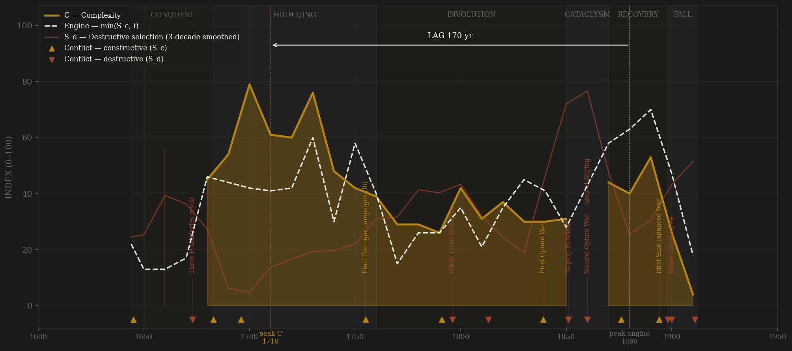
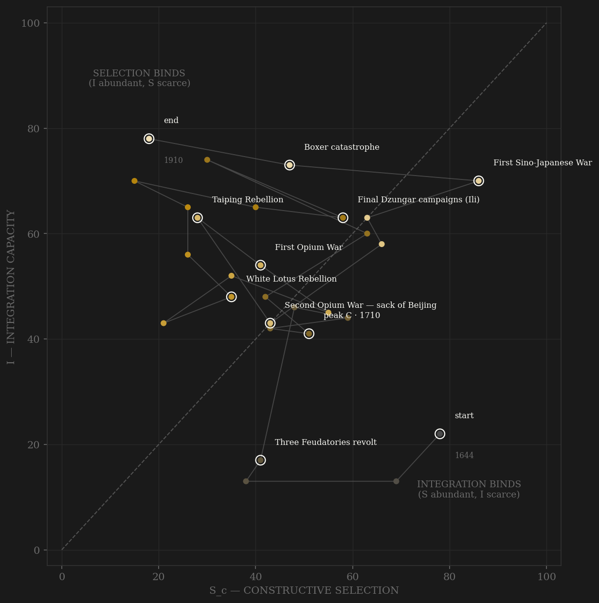

Qing carries the strongest measured integration series in the entire study: 2,323,336 monthly grain-price observations from 330 prefectures — the Wang Yeh-chien database of the empire's own price memorials — turned into a cross-prefecture convergence index on a fixed balanced panel, plus 27,678 CBDB jinshi degrees, a near-census of the ladder. What the measured record shows is a dynasty that got everything early. Complexity crests around 1700–1710: Broadberry's per-capita peak ($1,543 in 1700), the widest exam decades of the dynasty's life, the granary and price-reporting apparatus that Will and Wong called the most ambitious welfare machinery of the early-modern world. Grain markets are at their measured convergence maximum in the 1740s–80s — exactly Shiue and Keller's finding that mid-Qianlong China matched Western Europe on market integration. Then the long involution: population quadruples from 180 to 430 million while the jinshi quotas stand still and GDP per capita slides for a century — aggregate scale exploding, per-capita complexity bleeding out, the rentier endpoint of a ladder deliberately frozen. The mid-century cataclysm cuts the arc in two: Taiping, Nian, the Dungan wars, the sacked capital of 1860 — S_d pinned at 99 while the reporting prefectures themselves go dark. And then the strange late surge the lag statistic keys on: the engine's global peak lands in the 1880s–90s, when the recovering customs-telegraph-steamship integration meets the naval race with Japan, the qingyi memorial wars, and the swollen final exam cohorts. It is the calmest internal decade of the century — this is no crisis-contamination artifact — but it comes 170 years after measured complexity peaked, and per-capita complexity never answers it. Lag −170, FAIL, under the v2 contestability definition and the external-war-only definition alike. Within the High Qing itself the local structure is orthodox — engine plateau 1720s–50s, C peak 1700–1710, near-simultaneous — but the dynasty-level test measures the whole arc, and the whole arc says the revival came a century and a half too late to select on anything.

The trajectory enters like every conquest regime: high selection, no integration — the multi-front war against the Southern Ming and Zheng with an archive barely assembled. It climbs the integration axis through Kangxi's reconstruction, crosses the diagonal early, and spends the High Qing deep in the selection-binds region — by the 1740s integration sits at its granary-and-grain-market maximum while the steppe rival that had disciplined the state for a millennium is annihilated at Ili. That annihilation is the quiet hinge of the whole portrait: channel B collapses not from decadence but from total victory, and the Qianlong autocracy strangles channel C in the same generation. The path slides down the S axis for a century with I decaying more slowly — involution in phase space. The cataclysm of the 1850s–60s hurls it briefly rightward (S_d, not S_c, is doing the pushing) and guts I; the Restoration then produces the sample's most distinctive figure: the path climbs BOTH axes again in the 1870s–90s — telegraph, customs, railways on one axis, naval race and reform contest on the other — a dying dynasty genuinely re-entering the game. The 1898 coup and the Boxer catastrophe break the recovery, the 1905 examination abolition removes the selection axis altogether, and the trajectory dies at (18, 78): integration near its dynasty maximum, selection at the floor — pinned against the S=0 wall exactly where Rome died, except that Rome starved of contest and the Qing amputated it by edict.
Coded by locus and target, never by outcome. The Qing ledger contains the cleanest matched pair in the sample: two Opium Wars against the same rival, one constructive, one destructive. The First (1839–42) stays S_c by the Hannibal rule — the Royal Navy took the coast but Beijing stood and the levy machinery never broke. The Second (1856–60) is S_d by the Adrianople rule — Beijing sacked, the Summer Palace burned, the emperor dead in flight at Rehe: core penetrated, whoever fired first. The 1894–95 war with Japan stays S_c by the Sarhu precedent — fought in Korea, Manchuria, and the Shandong littoral, the core untouched; coding by outcome is forbidden, and the humiliation changes nothing about the locus. The great internal catalogue — Three Feudatories, White Lotus, Eight Trigrams inside the Forbidden City itself, Taiping, Boxer, Xinhai — is all S_d: violence aimed at, or reaching, the dynasty's own coordination machinery. The Dzungar wars that fill the first century are the purest peer rivalry in the sample, and their termination in 1755–59 is the ledger's hardest lesson: the genocide of the Dzungar people was a moral catastrophe but not S_d by locus — and by annihilating rather than balancing its rival, the dynasty destroyed its own selection pressure. Russia and Japan fighting on Manchurian soil in 1904–05 while the Qing stood declared-neutral scores nothing: the bystander rule.
| YEAR | CONFLICT | CODE | CODING RATIONALE |
|---|---|---|---|
| 1645 | Conquest of the south (Yangzhou, Southern Ming) | Sc | War against rival claimant states — the Qing core in Beijing and Manchuria untouched; conquest violence against the annexed is not violence against the conqueror's machinery |
| 1673 | Three Feudatories revolt | Sd | Wu Sangui and the dynasty's own enfeoffed generals take half the empire into rebellion — the gravest internal war before the Taiping |
| 1683 | Conquest of Taiwan | Sc | The Zheng maritime state extinguished — an external rival polity; the haijin lifted the following year |
| 1696 | Jao Modo (Dzungar wars open) | Sc | Kangxi leads the army in person against Galdan — the purest peer-polity contest in the sample; the last Chinese emperor to command in the field |
| 1755 | Final Dzungar campaigns (Ili) | Sc | The 900-year steppe contest ends in total victory and genocide — external locus throughout, but annihilating the rival annihilates the rivalry: channel B collapses endogenously from here |
| 1791 | Second Gurkha campaign | Sc | Fuk'anggan marches to the Kathmandu valley; the last successful external campaign of the dynasty |
| 1796 | White Lotus Rebellion | Sd | Sectarian rising across three provinces exposes the Banner rot — suppression requires gentry militias, the fiscal reserve is spent, the mask comes off the High Qing |
| 1813 | Eight Trigrams rising | Sd | Rebels guided by palace eunuchs breach the Forbidden City itself — core penetration at the literal palace gate |
| 1839 | First Opium War | Sc | Peer-technology war fought at the maritime frontier from Canton to Zhenjiang; Beijing untouched, the levy machinery unbroken — the Hannibal rule |
| 1851 | Taiping Rebellion | Sd | Rebel capital at Nanjing for eleven years, 20–30 million dead, the Yangzi severed — the largest destructive-selection event in the entire study |
| 1860 | Second Opium War — sack of Beijing | Sd | Anglo-French forces burn the Yuanmingyuan, the court flees, Xianfeng dies at Rehe — external origin, total core penetration: the Adrianople rule |
| 1876 | Xinjiang reconquest | Sc | Zuo Zongtang destroys Yaqub Beg's Kashgarian emirate and forces the Ili question with Russia — the dynasty's last great continental campaign |
| 1894 | First Sino-Japanese War | Sc | The paradigm peer contest — Pyongyang, the Yalu, Weihaiwei — fought in Korea and on the littoral; coded by locus, never by outcome: the Sarhu precedent |
| 1898 | Coup against the Hundred Days | Sd | Cixi resumes the regency, the Six Gentlemen are executed, the reforming emperor is confined — the arena beheaded at the moment of its widest opening |
| 1900 | Boxer catastrophe | Sd | The court declares war on every power at once, Beijing is occupied a second time by the Eight-Nation Alliance, the provinces formally ignore the declaration — the machinery turning on itself at every level |
| 1911 | Xinhai Revolution | Sd | The Wuchang mutiny of the New Army — the instrument the reforms built — ends the dynasty in four months; terminal internal locus |
| COMPONENT | GRADE | BASIS |
|---|---|---|
| S_c — Constructive (v2 contestability) | ◐ corpus + coded | A: CBDB jinshi throughput/yr 0.40 (● measured; 27,678 Qing degrees, ENTRY_DATA codes 36/37/124 ≈ canonical ~26.8k, near-census; goes to a true measured zero after the 1905 abolition) · B: external peer rivalry 0.30 HARD CAP (○ coded 0–10, locus-cleaned: Dzungar/Burmese/Gurkha/Opium-I/Sino-French/Sino-Japanese in; Feudatories, White Lotus, Taiping, Opium-II, Boxer excised to S_d; Perdue 2005, Millward 1998, CHC v9–11) · C: within-rules political competition 0.30 (○ coded 0–10 — feudatory debate, 1836–40 opium memorial contest, Tongzhi Restoration debates, Hundred Days, constitutionalist assemblies; Polachek 1992, Bartlett 1991, Wright 1957; ledger in data/raw/qing/coding_ledger_v2.csv). No deviation from 0.4/0.3/0.3. Sc_v1_combat = channel B alone (straight-to-v2 rule) |
| S_d — Destructive | ◐ coded + corpus | Internal-violence ordinal (Feudatories, sectarian wars, Taiping/Nian/Panthay/Dungan, palace coups, core-penetrating invasions incl. 1860 and 1900) 50% + Qing Shilu rebellion-mention share 50% (● measured, ~300k indexed entries). CBDB punishment events too sparse to weight (14 dated Qing rows — notes only) |
| I — Integration | ● corpus-measured backbone | Grain-price cross-prefecture convergence 0.35 (● MEASURED: 2,323,336 monthly observations, Wang Yeh-chien/Academia Sinica DB, 1736–1911; fixed balanced panel of 136 wheat / 105 rice prefectures; 0.6 convergence + 0.4 reporting-coverage to kill Taiping-era survivor bias) + Shilu court-entry rate 0.25 (● measured; masked 1850s–60s where war traffic inflates volume) + coded openness 0.25 (○) + silver imports 0.15 (◐, von Glahn/Flynn-Giráldez, ends 1840). CBDB appointments (220,546 rows) audited and EXCLUDED — the 16× jump at the 1760s jinshenlu ingestion boundary is a source artifact |
| C — Complexity | ◐ measured + reconstruction | Equal-weight Maddison/Broadberry GDPpc (◐ reconstruction; observed 1661–1911 with gaps) + jinshi output/yr (● measured). Requires ≥2 components — NaN 1644–1659, 1670s, and the 1860s (Maddison's 1850→1870 gap spans the Taiping trough, never bridged). Chandler urban anchors excluded: two points inside the dynasty is a ramp, not a series |
| E — Entropy | ◐ measured + coded | Shilu disaster/relief stress share 45% (● measured; catches the 1876–79 famine and the White Lotus fiscal hemorrhage) + institutional-decay ordinal 45% (○) + rebellion share 10%. Note: stress share is diluted in the 1850s by war traffic in the denominator — the coded index carries the cataclysm there |
| R — Renewal | ◐ anchors | Ge Jianxiong population anchors, interpolated at decade midpoints; 100M (1644) → 432M (1851) → 330M (1865 post-Taiping trough) → 423M (1910). The 1741 baojia anchor (143M) dropped — registered-count basis artifact, not a decline |
28 decade rows built from local corpora by scripts/build_qing_sicre.py (2026-07-06; straight-to-v2 build per AMENDMENT_S_definition_v2.md — no v1 page ever existed, so Sc_v1_combat is channel B alone, the prior definition's operative content). Channels min-maxed 0–100 within dynasty before weighting; per-channel codes and rationales in data/raw/qing/coding_ledger_v2.csv; every exclusion documented in data/raw/qing/SOURCES.md (CBDB appointment ingestion break, Shilu war-traffic mask, urban two-point ramp, 1741 census basis, 1730s partial grain decade). Frozen-protocol lag under BOTH definitions: v2 engine 1880 → C 1710 = −170 FAIL; v1 engine 1880 → C 1710 = −170 FAIL — the definitions agree, and the engine peak sits on the century's calmest internal decade, so this is not crisis contamination. Robustness: the 1700 GDPpc point ($1,543) is a Broadberry model value; dropping that row moves peak C to 1720 and the lag to −160 — verdict unchanged. Construct caveat, stated not hidden: C is per-capita (GDPpc) plus a quota-capped throughput (jinshi/yr) — aggregate scale quadrupled while both C components were structurally prevented from following, which is itself the involution-rentier diagnosis the framework makes of the late Qing; within the High Qing alone the engine plateau (1720s–50s) and the C peak (1700–1710) are near-simultaneous. Grain-price integration is the strongest measured I series in the project — its 18th-century maximum and permanent post-Taiping degradation are measured facts, not codes. Rebuild: build_qing_sicre.py, then polity_report.py --slug qing.